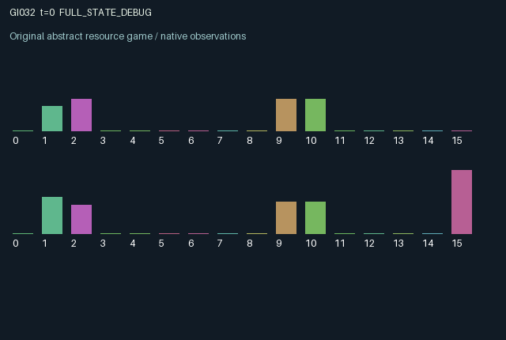

GI032 / LEGACY_ARRAY
astra-d2-00032: delayed lots with assays and sender warranties
2 agents5 actions16 observation columns32 original horizonRuntime: PASS
Release verification episode
Untrained uniform legal actions. Actual JAX state sampled along the full original episode; full-state debug camera. No human performance or learning claim.

Run this game
crucibles play --game 32
Start Python locally, then open the address printed by the terminal. Installation, multiplayer, takeover and keyboard controls →
Objective, rewards & ending
Exact task contract
{
"termination": "Original kernel t >= 32; see mechanism and source"
}Declared per-step reward bounds: -1.0 to 1.0. Observability: source_defined.
Rules
Original mechanism document (historical status wording retained)
# astra-d2-00032: delayed lots with assays and sender warranties This is an original parentless source proposal under work request `astra-d2-initial-00032-00035-a00`. It uses generic bilateral trade, hidden quality, costly inspection and warranty ideas. No benchmark or other candidate source was consulted. The relationship to those familiar mechanisms is intentional; program nonisomorphism and pool qualification have not been established. Each participant owns a stock quality and a private acceptance threshold. A sender can improve its stock, dispatch it into the other participant's one-slot mailbox, or attach a persistent warranty to its next dispatched lot. The receiving participant can inspect an existing lot or accept it. Dispatch clears the sender's quality to a low base. Received quality remains hidden until an inspection has completed. Public reputation averages acceptance/expiration reviews, rather than directly revealing the sender's current stock. The five actions are: 0 refine own stock; 1 dispatch when the receiver has capacity; 2 assay an unassayed incoming lot; 3 accept an incoming lot; 4 arm a warranty for the next outgoing lot. All actions are legal. An inapplicable operation has no material effect except that refining still incurs its stated cost. Arming an already armed warranty and repeated assays do not incur a second cost. A dispatch becomes an incoming lot only in the next observation. An assay is likewise available only after its action. Unaccepted lots expire when the old mailbox age reaches three; acceptance on that step takes precedence. A mailbox freed by acceptance or expiration can receive a new lot in the same transition, and the new lot is neither accepted nor inspected by that transition's receiving action. These orderings prevent a receiver from using a newly arriving hidden quality immediately. Acceptance rewards the receiver according to quality minus its private threshold, with a success bonus and insurance for an unsatisfactory warranted lot. The sender obtains a sale payment, loses a larger amount on an unsatisfactory warranted sale, and pays a smaller loss on expiration. Refining, successful dispatch, first assay and newly arming a warranty have explicit costs. The joint receiver and sender payoff for an agent is clipped to [-1, 1]; clipping is a per-step utility cap, not a physical conservation claim. Both agents change their own production and the other agent's future mailbox, reputation and settlement payoff. Inspection consumes scarce episode time; warranties can trade a current cost for altered acceptance incentives, but learning value is untested. Observation columns are: normalized clock; own stock quality; own acceptance threshold; incoming presence; normalized incoming age; assay-known flag; revealed assay or zero; incoming warranty; own armed warranty; own reputation; other reputation; other mailbox occupied; other mailbox age; last receiver payoff; last sender payoff; role index. The other stock quality and acceptance threshold are not exposed. Initial stock and threshold use only the supplied reset key; transitions thereafter are deterministic and do not need the step key. The interface is two agents, 16 float32 observation entries, five actions and a 32-step terminal condition. This handoff contains source and provenance only. Syntax parsing is not compilation, isolated validation, mechanism eligibility or evidence of learning effectiveness. Those outcomes remain unknown and belong to experimenter2.
Commands
0Action 0; see mechanism and source
1Action 1; see mechanism and source
2Action 2; see mechanism and source
3Action 3; see mechanism and source
4Action 4; see mechanism and source
Roles & abilities
agent_0 Original legacy agent; see mechanism and source
agent_1 Original legacy agent; see mechanism and source
Observation permissions
Training receives only the original observation rows. Role cameras use declared visibility; debug cameras are explicitly marked. Local benchmark records log debug exposure and role takeover history.
Exact observation layout
[]
Entity visibility & attributes
[]
Actual verification & provenance
Per-game execution receipt
{
"game": "gi032",
"status": "PASS",
"verification_revision": 2,
"source_sha256": "8a459ef8071c320a9dae7e3cd0c2a0ef365926aa4f96c1c61e93e8e660d7cfe2",
"seed": 20261101,
"runtime": {
"jax": "0.4.38",
"numpy": "1.26.4",
"devices": [
"TFRT_CPU_0"
]
},
"dimensions": {
"num_agents": 2,
"observation_size": 16,
"num_actions": 5,
"max_steps": 32
},
"checks": {
"eager_reset": {
"status": "PASS",
"seconds": 0.815185546875
},
"observation_spaces_legal_masks": {
"status": "PASS",
"seconds": 0.15327143669128418
},
"eager_step": {
"status": "PASS",
"seconds": 0.655794620513916
},
"jit_reset": {
"status": "PASS",
"seconds": 0.5086052417755127
},
"jit_step": {
"status": "PASS",
"seconds": 0.898040771484375
},
"eager_jit_integer_parity_float_measurement": {
"status": "PASS",
"seconds": 0.0010006427764892578
},
"jit_vmap_reset": {
"status": "PASS",
"seconds": 0.7193267345428467
},
"jit_vmap_step": {
"status": "PASS",
"seconds": 0.49196696281433105
},
"outer_autoreset_api": {
"status": "PASS",
"seconds": 0.8459744453430176
},
"full_original_horizon_episode_and_render": {
"status": "PASS",
"seconds": 1.755488395690918
}
},
"human_scores": null,
"browser_controls": "PENDING",
"failures": [],
"elapsed_seconds": 7.430030584335327,
"float_parity_max_abs": 0.0,
"numerical_parity": "EXACT",
"raw_terminal_absorbing": "NOT_PART_OF_ORIGINAL_LEGACY_CONTRACT",
"terminal_outer_reset": "PASS",
"episode_steps": 32,
"scripted_random_returns": [
0.26619979180395603,
1.222267508506775
],
"terminal": true,
"demo_information": "FULL_STATE_DEBUG",
"demo_frames": 33,
"render_roles_checked": 2
}Chromium control verification
{
"game": "gi032",
"status": "PASS",
"human_scores": null,
"engineering": true,
"checks": [
"catalog_selected_and_real_native_reset",
"dom_queue_and_native_step",
"second_participant_ownership_and_native_joint_step",
"all_roles_individually_controllable_no_role_cap",
"explicit_debug_camera",
"release_to_pure_ai_without_reset"
],
"ui_sha256": "15b5861d23b3c42811865c954d5a988280bbfd21cf8e93754be2437a027158c5",
"seconds": 3.4246065616607666
}Original identity and file hashes
{
"id": 32,
"key": "gi032",
"title": "astra-d2-00032: delayed lots with assays and sender warranties",
"summary": "",
"tags": [],
"family": "legacy_array",
"dimensions": {
"num_agents": 2,
"observation_size": 16,
"num_actions": 5,
"max_steps": 32
},
"source_sha256": "8a459ef8071c320a9dae7e3cd0c2a0ef365926aa4f96c1c61e93e8e660d7cfe2",
"manifest_sha256": "ea4fd279cd2c9c2dfa302dcea2cc20f5bacc73030a9661b3c073dca800204b8f",
"files": [
{
"file": "candidate.py",
"sha256": "8a459ef8071c320a9dae7e3cd0c2a0ef365926aa4f96c1c61e93e8e660d7cfe2",
"bytes": 5746,
"origin": "work/exp_2/astra_generation/discovery_v2/initial/candidate_00032/attempt_00/candidate.py"
},
{
"file": "mechanism.md",
"sha256": "1e676f9f322534ce1728f31621fefd40f8538832f04854560267fcfdfb5b59d3",
"bytes": 3522,
"origin": "work/exp_2/astra_generation/discovery_v2/initial/candidate_00032/attempt_00/mechanism.md"
}
],
"original_status": "LEGACY_SOURCE",
"original_saved_replay": false,
"release_validation": "PASS",
"human_scores": null,
"browser_validation": "PASS"
}